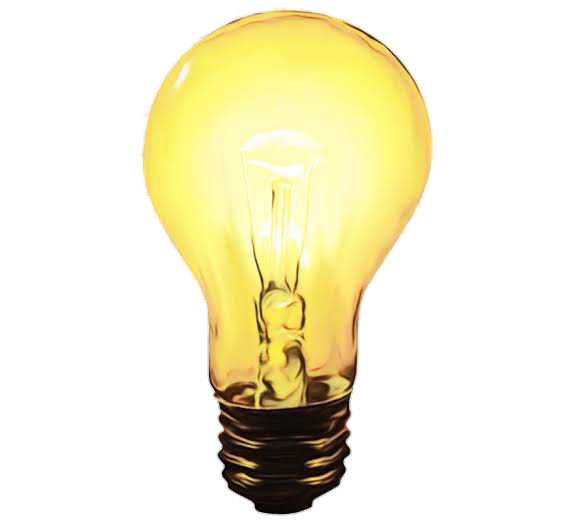
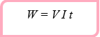
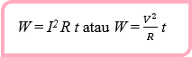

PERUBAHAN ENERGI LISTRIK
Energi adalah kemampuan untuk melakukan usaha. Dalam energi listrik, apakah yang melakukan usaha? Cobalah kamu perhatikan di rumahmu, benda-benda apakah yang menggunakan energi listrik? Apakah yang menyebabkan benda-benda elektronik dapat berfungsi? Cobalah kamu bayangkan jika kamu hidup tanpa adanya listrik. Tentu kamu akan merasa gelap pada malam hari, merasa sepi tanpa radio atau TV, dan sulit melakukan aktivitas sehari-hari. Oleh karena itu, Tuhan telah menciptakan manusia dengan akal pikiran agar manusia dapat mencari ilmu dan mengembangkannya untuk kesejahteraan hidup manusia itu sendiri. Dengan demikian, marilah kita pelajari bahasan tentang energi listrik dan penerapannya berikut ini. Arus listrik memiliki kemampuan untuk menyalakan lampu, memanaskan air, membunyikan radio, dan menggerakkan kipas angin. Jadi, apakah yang menghasilkan energi listrik? Energi listrik dihasilkan oleh arus listrik, arus listrik ini tiada lain merupakan aliran elektron. Kamu telah mempelajari Hukum Kekekalan Energi yang menyatakan bahwa energi tidak dapat diciptakan dan tidak dapat dimusnahkan, tetapi energi dapat diubah dari bentuk yang satu ke bentuk yang lain. Contoh perubahan bentuk energi listrik menjadi bentuk energi lain diperlihatkan pada gambar berikut
Energi hanya dapat berubah bentuk ke bentuk lainnya. Perubahan-perubahan energi inilah yang banyak dimanfaatkan untuk kebutuhan hidup manusia. Energi listrik yang dihasilkan dari energi kinetik dapat berubah bentuk menajdi energi cahaya, energi gerak, energi bunyi, dan bentuk energi lainnya yang dibutuhkan oleh manusia. Besarnya energi listrik yang dikeluarkan sumber energi listrik dipengaruhi oleh besarnya tegangan (V), kuat arus (I) dan waktu (t) sehingga apabila penghantar yang hambatannya R diberikan tegangan V pada ujung-ujungnya, dan arus I melaluinya, maka dalam waktu t detik, besar energi listrik yang diperoleh dapat dirumuskan sebagai berikut.
Dengan memanfaatkan hukum Ohm, V = I R , maka diperoleh:
dengan keterangan :
W = energi listrik (Joule, J)
V = tegangan listrik (Volt, V)
I = arus listrik (Ampere, A)
R = hambatan listrik (Ohm, W)
t = waktu (sekon, s)